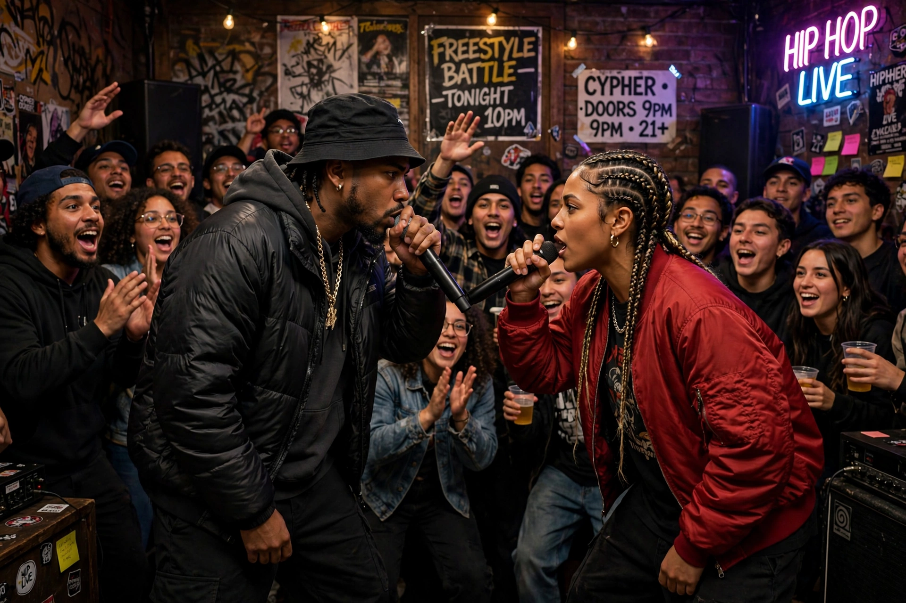

Battle rap

Battle rap (also known as rap battling) is a competitive form of hip hop performance in which two or more rappers exchange improvised or pre-written verses, typically insulting their opponent ("dissing") while boasting of their own skill. Battles may be freestyle — composed on the spot — or written in advance, and are judged by a panel or by crowd reaction.
| Stylistic origins | Hip hop, the dozens, flyting, signifying |
|---|---|
| Cultural origins | Late 1970s–1980s, New York City |
| Typical features | Disses, wordplay, punchlines, personals, rebuttals, crowd control |
History
Battle rap descends from African-American verbal-duelling traditions such as the dozens, and from older contests like Scottish flyting. In early hip hop, MCs battled at park jams and clubs for reputation: celebrated early clashes include Busy Bee Starski versus Kool Moe Dee at Harlem World in 1981 and the contest between MC Shan and KRS-One in the "Bridge Wars." Freestyle battles became a proving ground, with events such as Scribble Jam and Blaze Battle, and televised segments on 106 & Park's Freestyle Friday.
Modern league era
From the late 2000s, a cappella written battles organised by leagues largely replaced beat-based freestyles. Canada's King of the Dot, the American URL (Ultimate Rap League), Britain's Don't Flop and Australia's Got Beef built large online audiences through YouTube releases, with stars such as Loaded Lux, Hollow Da Don, Murda Mook, Tsu Surf, Dizaster and The Saurus. Battles are usually three rounds, staged in a pit-style crowd, and mix prepared "angles" and personals with improvised rebuttals.
Techniques
Competitors are rated on lyricism, wordplay (puns, double entendres, schemes), delivery, stage presence and crowd reaction. Common devices include "haymaker" punchlines, breaking down an opponent's name, exposing personal history, and "choking" — forgetting one's material — which is heavily penalised.